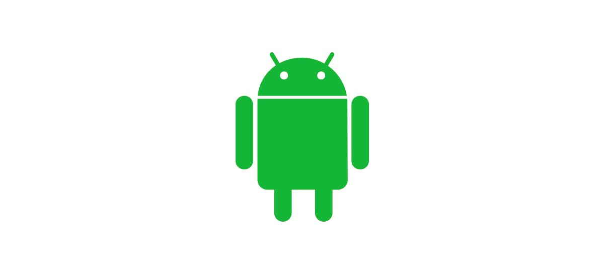

Historia do Mascote do Android
Provavelmente voce sabe que o sistema operacional Android ,
mantido pelo Google é um dos mais utilizados para dispositivos moveis em todo mundo.
Mas talvez voce nao saiba que o seu simpatico mascote tem um nome e uma história muito curiosa?
Pois acompanhe esse artigo para aprender muita curiosidades
sobre o robozinho.
A primeira versão
A primera tentativa de criar um mascote surgiu em 2007 e veio do desenvolvedor chamado Dan morril . Ele conta que abriu o Inskcape (Software livre de vetorização de imagens) e criou sua propria versao do robo. O objetivo era personificar o sistema apenas para a sua equipe, nao existia nenhum solicitação da empresa para criar o mascote. Essa primeira versão bizarra ate foi batizada em homenagem ao seu criador: seriam os Dandroids.
Surge um novo mascote
A ideia é ter uma mascote mais amadurecido e a missao foi passada para o profissional da área. A ilustradora Russsa Irina alok, tambem funcionária do Google, ficou com a missão de representar o pequeno robô de uma maneira mais agradável.